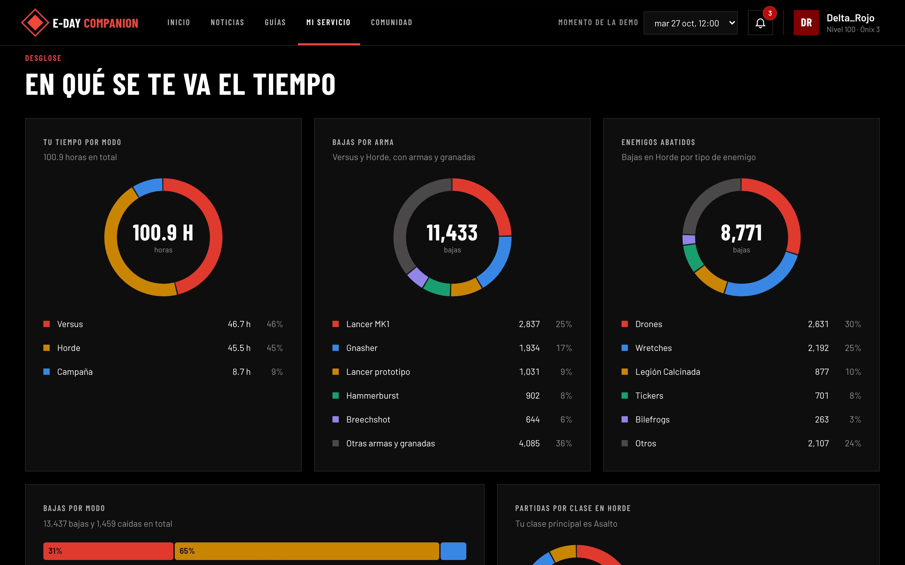
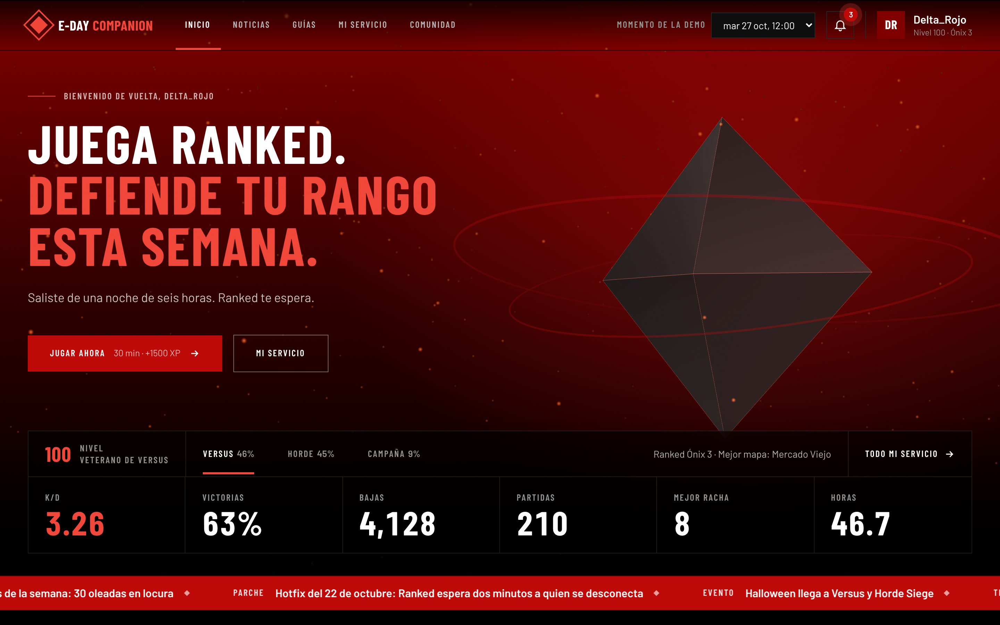
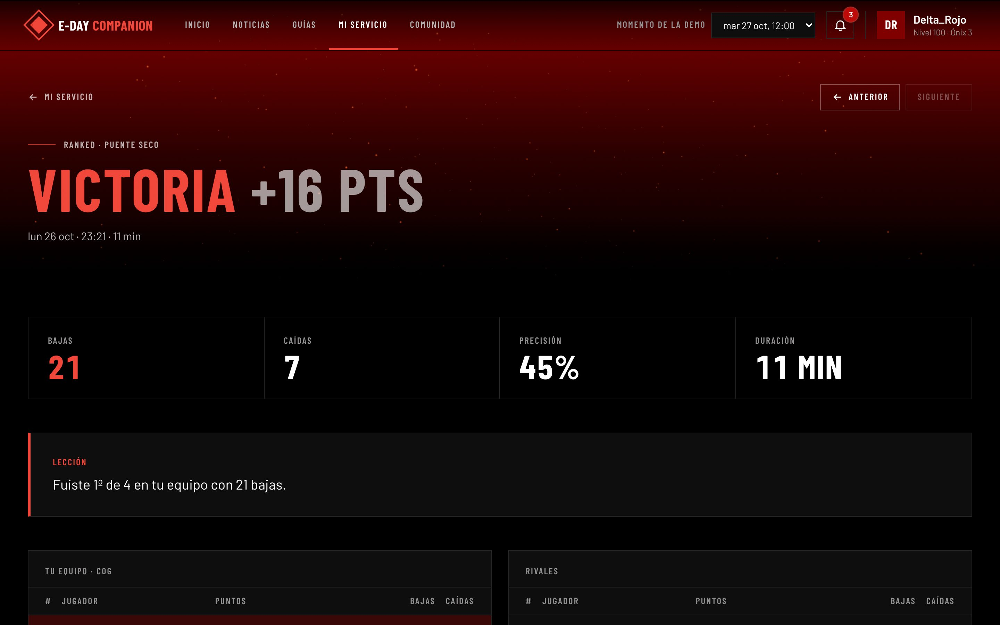
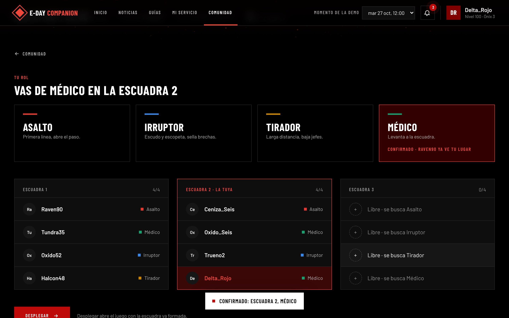
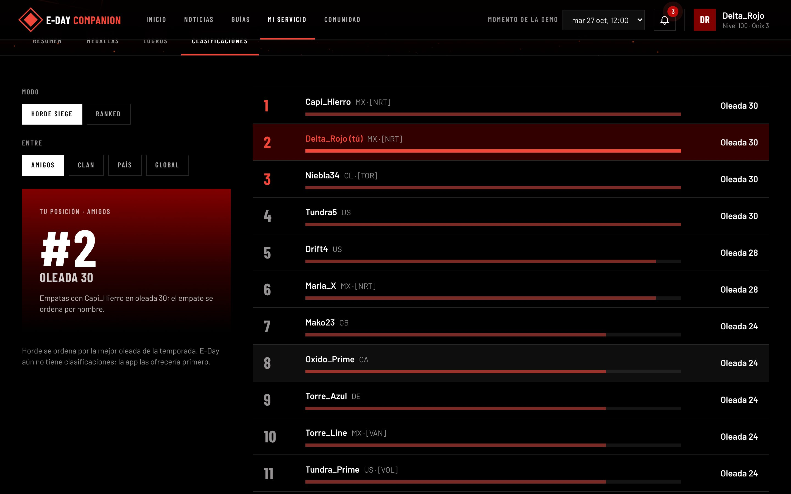
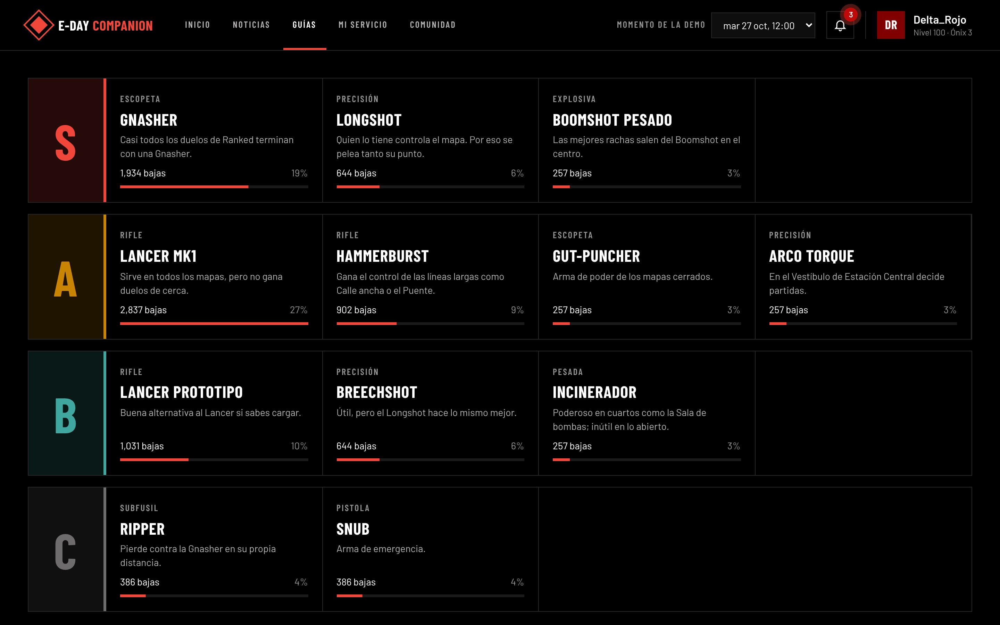
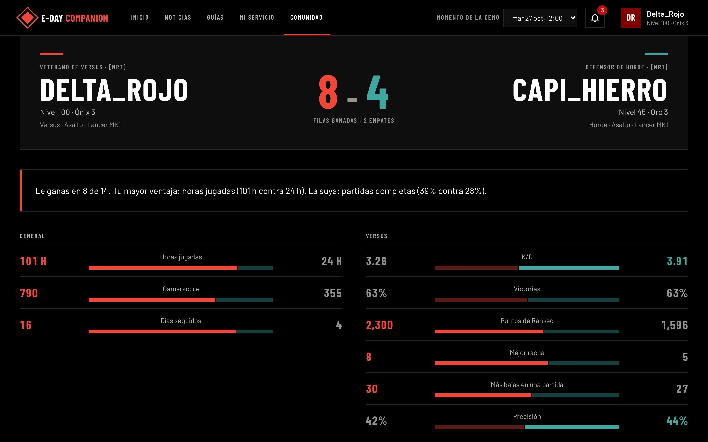
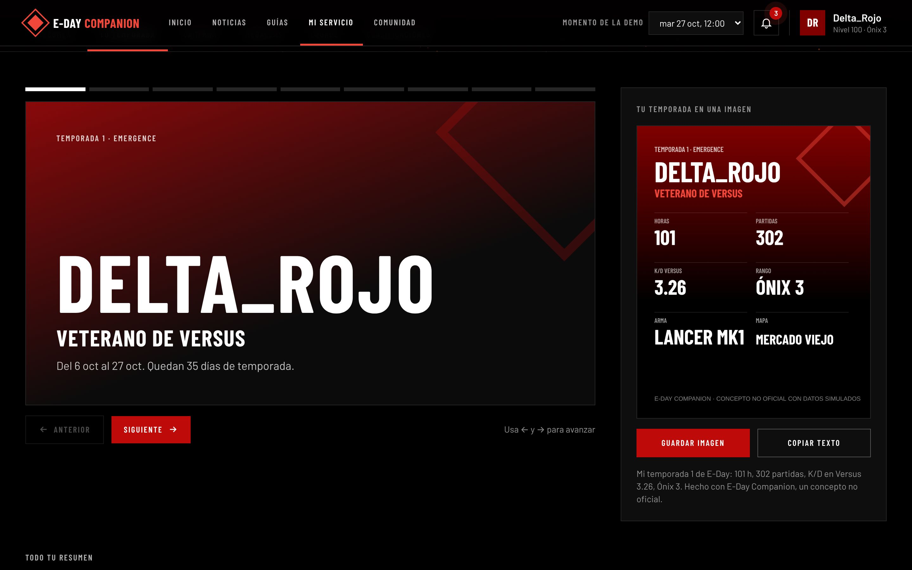
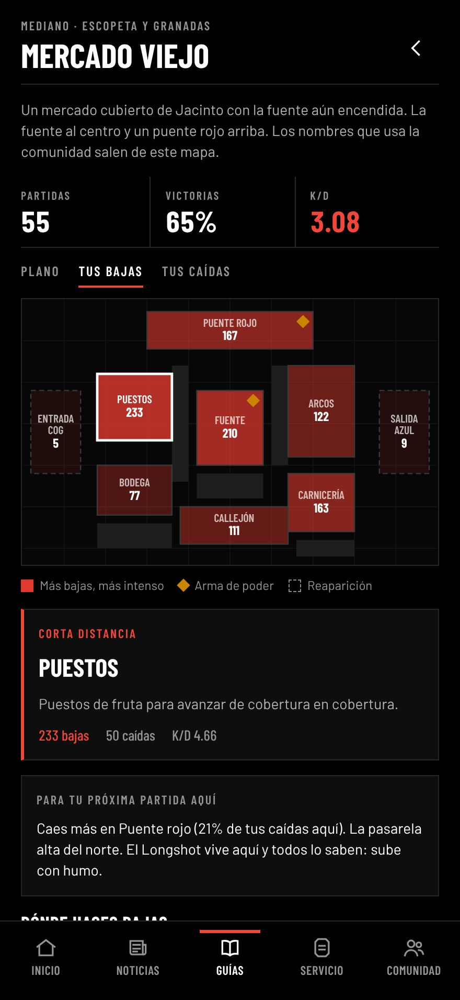
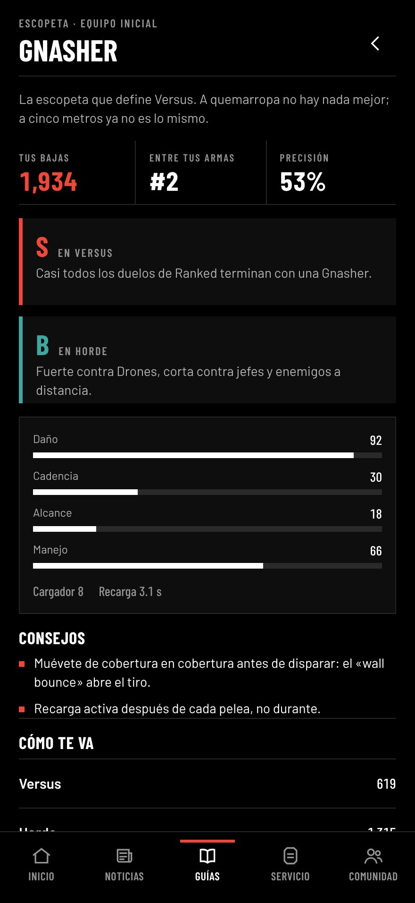

Ana
La que lo probó por Game Pass · Xbox Series S
No sé qué hacer después; hay otros juegos esperando.
- Qué la haría volver
- Una meta corta con recompensa clara
- En la app
- Inicio con su semana y la tienda
La app companion que Gears of War: E-Day podría tener si fuera oficial: noticias, guías, tu historial de servicio y escuadras de Horde, en el teléfono, en tablet y en la web.
No afiliado a Microsoft, Xbox ni The Coalition. Sin logos, arte ni fuentes del juego; los mapas, marcas y creadores son inventados. La app funciona en español y en inglés: un botón cambia teléfono, tablet y web a la vez.
E-Day salió el 6 de octubre de 2026 dentro de Game Pass. Las estimaciones de Alinea Analytics describen un lanzamiento con mucho alcance y poca permanencia:
Fuente: Alinea Analytics, estimaciones de terceros.
Fuera del juego no había nada que le diera a esa persona una razón concreta para volver: ni sus números, ni una meta para la semana, ni una forma fácil de juntar escuadra.
Si quien probó E-Day recibe cada semana una meta corta y personal, más jugadores vuelven en su segunda semana.
Proto-personas: hipótesis armadas con los datos de retención y reseñas públicas, no con entrevistas.
No sé qué hacer después; hay otros juegos esperando.
No veo mis estadísticas ni cómo voy frente a otros.
Juntar a 12 personas por WhatsApp es un caos.
Las 10 pantallas clave se diseñaron en dos direcciones visuales y se pusieron frente a una prueba sintética: 10 perfiles simulados, armados a partir de reseñas reales de jugadores, que recorrieron la app con tareas concretas. No sustituye una prueba con personas, pero sirvió para encontrar problemas antes de escribir código.
La navegación funcionó. Todos los perfiles encontraron su partida, la tienda y la escuadra.
Pocas ganas de instalarla. La misión semanal siempre sugería Ranked, aunque el perfil solo jugara Horde o campaña.
Preferencia por la dirección A sobre la B, por legibilidad.
De ahí salieron seis cambios: misión según el modo que juegas, hora local en todo, saldo de Monedas y Hierro con el tope semanal, un planificador que confirma tu rol, filtros en escuadras y clasificación también para Horde.
Lo que los jugadores piden en foros, reseñas y videos es más amplio que una misión: quieren saber qué cambió en el último parche, aprender una clase de Horde y ver sus propios números. El juego tampoco tiene clasificaciones ni partidas privadas, así que una app oficial podría darlas primero.
Halo Waypoint es la referencia más cercana: el hub oficial de una saga de Xbox que reúne noticias, servicio del jugador y comunidad. Su app móvil cerró en 2023 y hoy vive en la web, lo que dejó claro que la versión web también cuenta. La estructura quedó en cinco pestañas:
Tus números por modo, la semana, la tienda, el calendario y lo último.
Parches, eventos y temporadas, con notas que se entienden.
Clases y builds de Horde, armas, mapas y coleccionables, oficiales y de creadores.
Carrera en gráficas, 74 series de medallas, logros, historial y clasificaciones.
Escuadras con roles, tu clan, creadores y el planificador de Horde.
Paneles militares y tipografía de placa. Ganó la prueba sintética por legibilidad.
Una interfaz de juego encima de la app. Llamativa, pero cansaba en pantallas largas.
Una app oficial seguiría la marca. Se tomó el lenguaje del sitio del juego: negro, banda roja, esquinas rectas, Barlow Condensed.
#000000#800000#BF0A0A#F0473A#959393El rojo de texto del sitio se aclaró un poco, de #E43127 a #F0473A, para pasar 4.5:1 sobre fondo oscuro. El arte es propio: brillos y degradados en lugar de imágenes del juego.
302 partidas y 100 horas no caben en una lista. Mi servicio las parte en lo que el jugador quiere saber: en qué modo se le va el tiempo, con qué arma mata, contra qué enemigos y a qué hora juega.


Seis partes como máximo; el resto se junta en «Otras», siempre en gris y al final.
Victorias por mapa o mejor oleada por mapa van en barras sobre una misma base, de un solo color.
Seis colores revisados para daltonismo sobre el fondo oscuro, con el rojo de la marca primero.
Cada gráfica nombra sus partes con valor y porcentaje, y cada parte se puede tocar o enfocar con teclado.
El teléfono es para lo rápido: revisar la última partida, ver si la escuadra del viernes ya está completa. La web es donde se lee una guía o se compara la temporada, así que tiene más espacio y más movimiento: una medalla en 3D en la portada, números que cuentan hacia arriba, tarjetas que se inclinan bajo el cursor.






Con la base terminada, añadí lo que en Halo Waypoint y en las apps de estadísticas hace volver a la gente: saber dónde pierdes en cada mapa, qué arma te conviene, qué te falta de la campaña y cómo vas contra tus amigos. Cada una salió del mismo contrato, primero en el backend simulado con sus pruebas y después en la app y en la web.







Sin acceso real a los servidores del juego, todo parte de un contrato OpenAPI que describe la API que una app oficial necesitaría. De ese contrato salen los tipos, y un backend simulado lo implementa dentro del navegador, así la demo funciona sin servidor y la app y la web leen exactamente los mismos datos.
Un reloj de demo salta entre cuatro momentos de la temporada (un martes al mediodía, una hora antes de Horde, el viernes de la sesión del clan, el día que rota la tienda) y todo se recalcula: avisos, misión, escuadras y tienda.
43 operaciones: jugador, servicio, medallas, partidas, tienda, sesiones, clanes, noticias, guías, mapas, armas, campaña y comparación.
contract/openapi.yamlTypeScript generado del contrato, compartido por todo el repositorio.
packages/api-typesImplementa el contrato con datos deterministas; corre en el navegador o como servidor HTTP.
apps/api-mockExpo y Expo Router para teléfono y tablet; Vite, React, Tailwind y three.js para la web.
apps/mobile · apps/webLas dos últimas cifras salen de la semana de pulido: contraste y roles corregidos en gráficas y filtros, y three.js separado para que cargue después de la página. Las cuatro herramientas nuevas también cargan aparte, la primera vez que se abren.
Todo en la demo es simulado, así que no hay resultados que presumir. Esto es lo que se mediría con jugadores reales:
| Métrica | Tipo | Definición |
|---|---|---|
| Regreso en semana 2 | Principal | Jugadores con al menos una partida entre los días 8 y 14 tras la primera |
| Sesiones de escuadra jugadas | Apoyo | Sesiones creadas en la app que terminan en partida |
| Reportes abiertos | Apoyo | Partidas cuyo reporte se abre en las 24 horas siguientes |
| Avisos de tienda abiertos | Apoyo | Avisos de la lista de deseos que se abren |
| Avisos desactivados | Control | Usuarios que apagan los avisos, para no pasarse de insistentes |
Repetir los tres recorridos con jugadores reales de Game Pass, Ranked y clanes de Horde.
La web pasa axe; falta revisar la app con VoiceOver y TalkBack en dispositivos.
Cambiar el backend simulado por la API real sin tocar las pantallas, porque ambos siguen el mismo contrato.